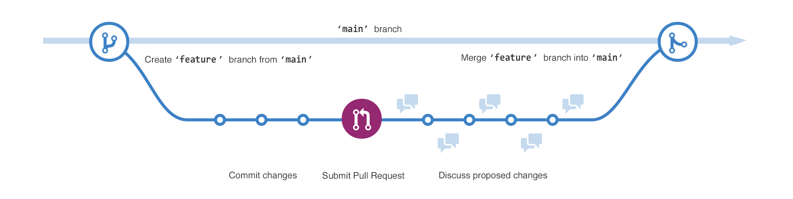
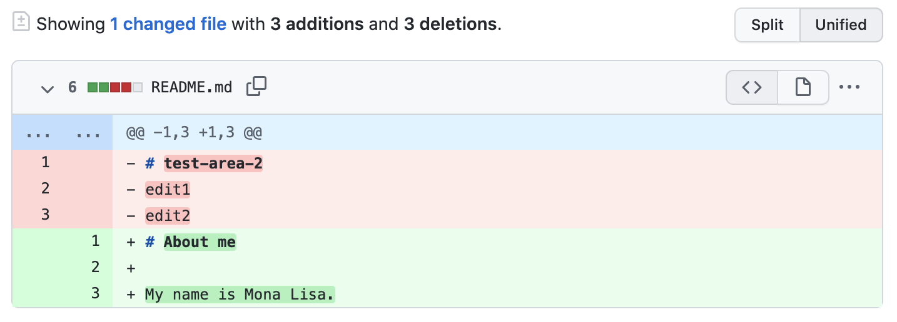
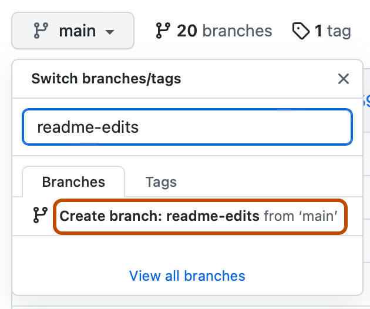

Git
A free tool on your computer
Git takes snapshots of your project. Each snapshot remembers exactly how every file looked at that moment. You can go back to any of them.
Like a camera that photographs your work.
Images: GitHub Explore
Save your work, go back in time, and build things with other people.
No coding needed. About 15 minutes.
The problem
You save a file. Then you save it again with a new name. And again. Soon you have no idea which one is the real one.
Git fixes this.
With Git you keep one file. Git quietly remembers every version for you, with a note about what changed.
Two names, two jobs
People mix them up all the time. Here is the simple difference.
A free tool on your computer
Git takes snapshots of your project. Each snapshot remembers exactly how every file looked at that moment. You can go back to any of them.
Like a camera that photographs your work.
A website
GitHub keeps your Git projects online. That way you can back them up, share them, and work on them with other people.
Like an online album where everyone can see the photos.
Images: GitHub Explore
Idea 1 of 5
A repository (or "repo") holds all the files of one project. It also keeps the full history of every change ever made.
A README is the welcome sign of your repo. It is a short text file that says what the project is and how to use it. GitHub shows it on the front page of your repo.
The .md ending means Markdown, a simple way to write text with headings and lists.

Idea 2 of 5
When you commit, Git takes a snapshot of your files. You add a short message so you remember what you changed.
Made a mistake? Jump back to any dot. Good messages are short and clear, like "Fix typo in title".
Idea 3 of 5

Idea 4 of 5
A pull request (or "PR") asks the team to look at your branch and add it to main. GitHub shows exactly what changed. This view is called a diff.

Others can leave comments, ask questions, or suggest fixes before anything changes in main.
Idea 5 of 5
Merging adds the changes from your branch into main. Most of the time it takes two clicks.
On the pull request page, click Merge pull request, then Confirm merge. Try it:
Ana and Ben changed the same line. Git cannot guess which one is right, so it asks you. It is not an error. It is just a question.
Line 1 of README.md
Welcome to my pageHello and welcomePick one to fix the conflict.
Put it together
This is how most people work on GitHub. Five steps, again and again.
Then repeat with a new branch.
For later
You can do everything on this page in your browser. But one day you may use Git on your own computer by typing commands. Click one to see what it does.
Pick a command above to try it.
What does it do?
Each command has a plain English meaning. Pick one to find out.
Your turn
Open github.com in a new tab and sign in (it is free). Follow these five steps. Tick each one when you finish.
0 of 5 done
Click + in the top right corner, then New repository. Name it hello-world. Turn on Add a README file. Click Create repository.
On the Code tab, click the button that says main. Type readme-edits in the box. Click Create branch: readme-edits from 'main'.

While on the readme-edits branch, click README.md, then the pencil icon. Write a line about yourself. Click Commit changes, add a short message, and click Commit changes again.
Click the Pull requests tab, then New pull request. Choose readme-edits to compare with main. Check the red and green lines. Click Create pull request, add a title, and click Create pull request again.
At the bottom of your pull request, click Merge pull request, then Confirm merge. You can now delete the branch. Your change is in main!
Good to know next
A to-do list for your project. Use issues to report bugs, ask questions or plan new ideas.
Your own copy of someone else's repo. Change it freely, then offer your changes back with a pull request.
Free website hosting. Put HTML files in a repo and GitHub turns them into a live website. Like this one!
An extra lock on your account. After your password, you also enter a code from your phone. Turn it on.
Check yourself
Five quick questions. No pressure. You get the answer right away.
Look it up
Every word from this page, in one place.
No match. Try a different word.
Keep going
You now know the basics. These free resources from GitHub will take you further.